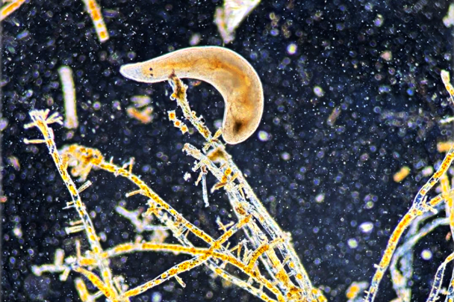

Project Name
Intro about Website
Identification and Counting of
Microscopic Marine Organisms
using AI

Below is a free classifier to identify and count of
Microscopic Marine Organisms
Upload Images
output
Confidence Score
98%
How this Classfier works